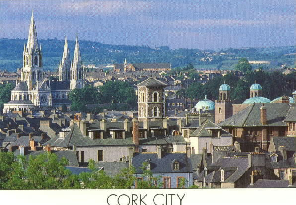
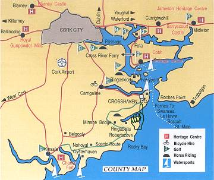

| Home | What To Do | University College Cork | Cork City Gaol | Cork City Hall | Fota Wildlife Park |
Cork - Ireland's third largest city


Cork City is the third largest city in Ireland (second largest city in the south of Ireland) and has always been an important seaport. It began on an island in the swampy estuary of the River Lee (the Irish for Cork 'Corcaigh' means a marsh) and gradually climbed up the steep banks on either side. Today the river flows through the city in two main channels so you find yourself constantly crossing bridges.The city is often called "Rebel Cork" because it was a center of the 19th century Fenian movement and played an active part in the Irish struggle for independence. Cork people have a great passion for sport, particularly hurling, and this is typified in the naming of a bridge after one of it?s greatest hurlers, namely, Christy Ring Bridge.Cork is a place of commercial importance, largely due to the excellence of its harbour. It is an export centre for the agricultural produce of the south, and the many industries in the city include brewing, distilling, hosiery, flour milling, bacon curing, chemical and paint works, clothing and footwear factories.

Cork City - In Summary
- The River Lee & Cork Harbour
- Architecture - St. Finn Barre's Cathedral
- University College Cork
- City Hall
- Churches - Shandon Church & the famous Shandon Bells,
- St. Mary's Cathedral,
- Father Matthew Memorial Church,
- St. Mary's Dominican Church
- Cork Heritage Park at Blackrock
- Markets - The 'English' Market,
- Coal Quay open-air market
- Visitor Attractions -
- Crawford Gallery,
- Berwick Fountain, Bishop Lucey Park,
- Father Theobold Matthew Monument,
- Old Cork Gaol
- Shopping - Local,
- National and International Brands
- Restaurants - Irish and International Cuisine
- Leisure Pursuits -
- Golf,
- Walking,
- Fishing,
- Equestrian,
- Leisure Centres
- Accommodation -
- Hotels,
- B & B's,
- Guesthouses,
- Houses & Apartments for Rent,
- Caravan & Camping,
- Hostels
- Transport - Cork Airport,
- Ringaskiddy Ferryport,
- Railway Station,
- Buses,
- Taxis,
- Cycles, Vehicle Rental,
- Chauffeur Drive Limousines